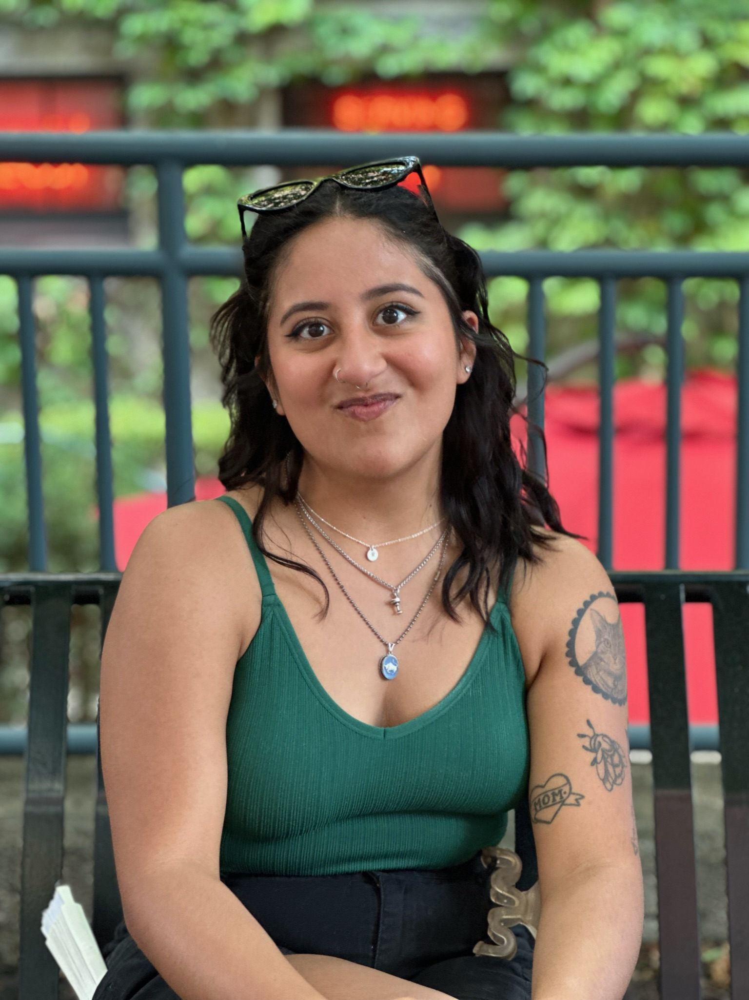

Camila Zelaya was born on May 20th, 2000, in Cincinnati, Ohio. After graduating from high school, she pursued her bachelor's degree at The Ohio State University. She graduated with a major in Anthropology and a minor in History and Spanish. While in college, Camila participated in many student organizations, including Greek Life and an organization dedicated to assisting Hispanic students. She studied abroad in London where she learned to admire and understand British culture. While in London, Camila was inspired to pursue her minor in History. Her study abroad program also inspired her to continuously try new things and be open to whatever opportunities presented themselves. This led to her attending field school after graduation in Italy. Camila assisted in restoring old paintings and frescoes. Some of these artworks were created as early as the 3rd century! Camila gained popularity with her professors and advisors on this trip, discovering that she had a knack for art restoration.
Although Camila has not found a position in her field, she has found success in the job market otherwise. After graduating from The Ohio State University, Camila worked in various positions of management as an assistant manager and a shift lead. Her managers had promoted her to these positions due to her maturity and work ethic. Under these roles, she has had to learn to manage people, schedules, and business.
Outside of school and work, Camila likes to unwind with various crafts. She loves to work on painting by numbers, diamond art, and sewing. Camila also likes to read books, specifically thrillers. She has a 3-year-old cat named Pico.